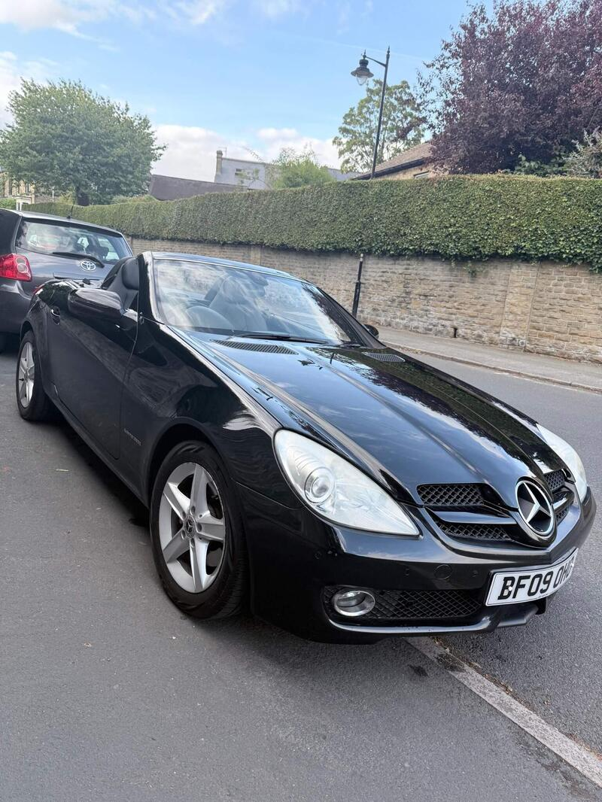
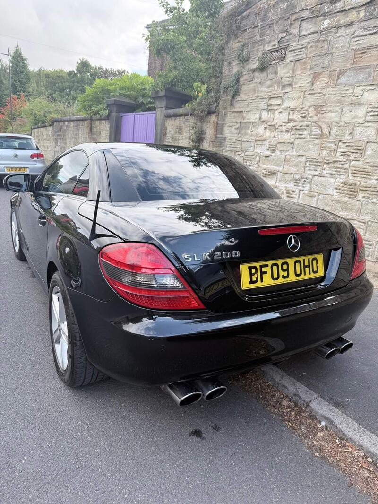
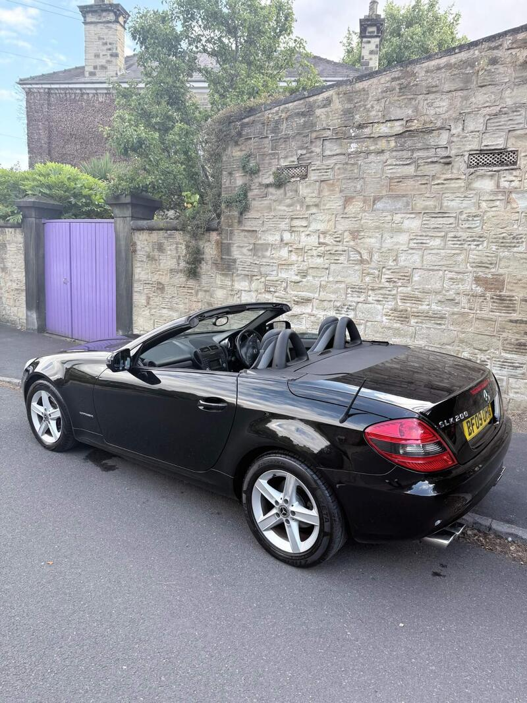
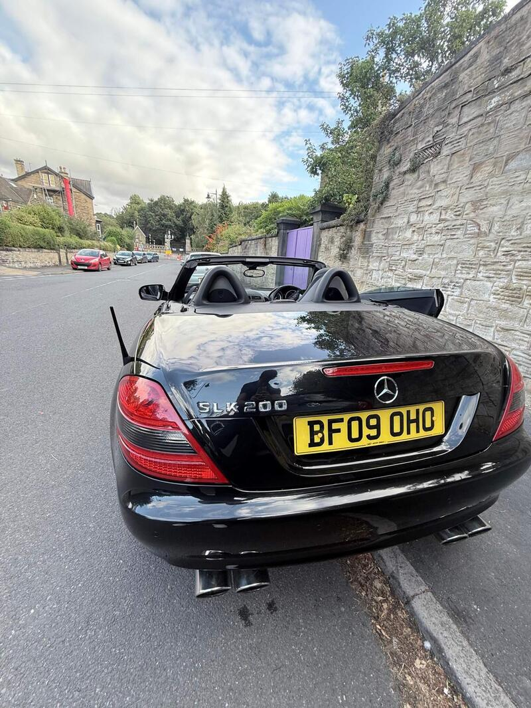

Seller photos from the AutoTrader ad.
Mercedes SLK 1.8 SLK200K Tiptronic
The cheapest R171 at £2,200. A good folding hard-top starter.
Key facts
| Price | £2,200 |
|---|---|
| Year | 2009 |
| Miles | 100,750 |
| Model | Mercedes SLK 1.8 SLK200K Tiptronic |
| Colour | Black |
| Registration | 2009 (09 reg) |
| Owners | 11 owners |
| Service history | Not stated |
| MOT (AutoTrader ad) | 2 Jun 2027 (ad) |
| Seller | Private |
| Location | Bromley |
| From GU7 | 32 mi (AutoTrader) |
| Checked | 15 October 2026 |
Why buy it
- R171 galvanised body, no dents or paint damage (ad)
- ULEZ compliant auto
Things to check
Check the rear subframe for corrosion
Run the Vario roof (25-30 s)
- Mercedes SLK R170/R171 weak spots
R171 (2004-11) galvanised and largely rust-free, but rear subframes corrode (MOT fails). R170 rusts badly – wings, arches, sills, screen pillars. Vario roof: hydraulic ram leaks, microswitches, should cycle in ~25-30s; M272 V6 balance-shaft gear on early cars; cracked exhaust Y-pipe; auto box wants oil changes.
Seller says (extract)
“2009 Mercedes-Benz SLK200 Kompressor Automatic (ULEZ COMPLIANT), a really nice example for its age and mileage, with the bodywork and interior in great overall condition. The body is in particularly good shape with no dents, body damage or paint damage. There is one thin key mark on the left-hand side, but otherwise the exterior presents very well for a car of this age. The car has been well looked after and is a great-looking, comfortable and enjoyable car that can easily be used as a daily. There are two things to consider hence the low price: There appears to be some work that may eventually be needed around the front-right suspension/tyre area. It doesn't affect the way the car drives, but it's something I'd consider addressing for the longer term. The electric hardtop was working completely normally until very recently. It has now stopped completing its full operation. At the moment the mirrors fold and the roof begins its operation before stopping. As it was working perfectly just a few days ago, it may be something relatively minor such as a sensor, although I obviously can't guarantee the cause without having it properly diagnosed. The photos in the advert were taken a week before the advert is posted when the roof was operating normally. Those are the only two things I'm aware of that need consideration. The car itself is fully driveable and doesn't require any major repair to be used as a daily car. Engine, gearbox and the rest of the car are in good condition for its age and mileage. Viewing welcome in Bromley, BR8. Weekdays between 7-10pm and anytime at weekends.…”